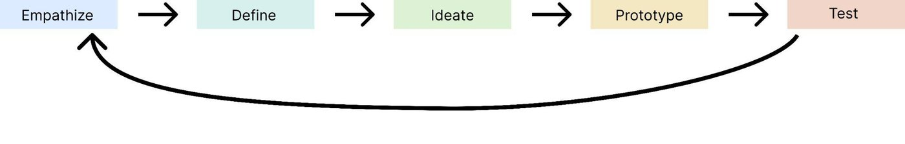
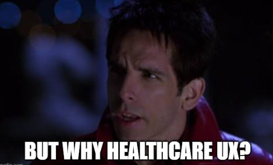
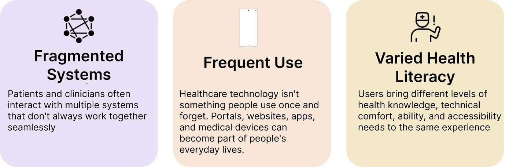
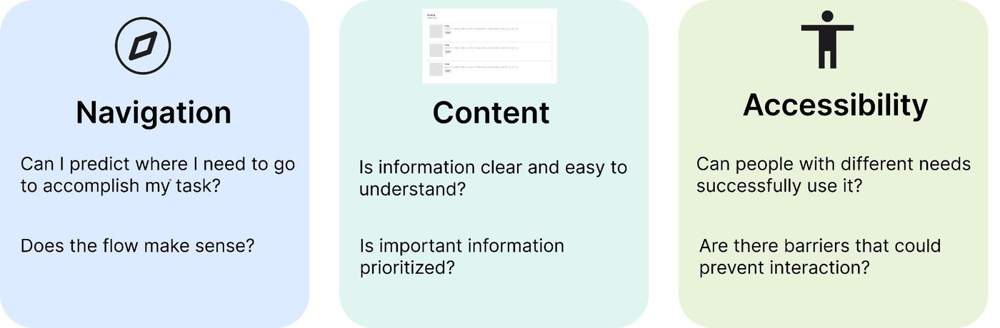
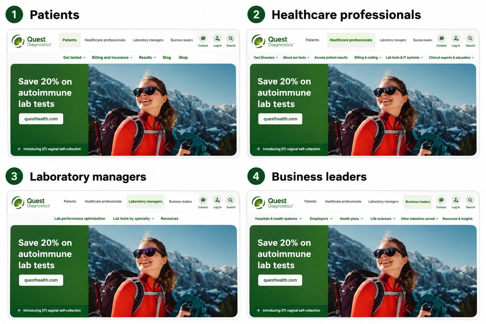
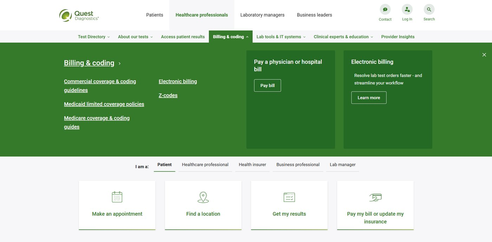

Hi, I'm Dan and I love Healthcare UX. But four years ago, I had no idea what that meant.
I just graduated with a degree in Human-Centered Design and Development from Penn State University back in May. A strange name for a major, I know. Someone working in UX or Product Design might recognize what that means immediately, but even though I declared my major at the end of freshman year, I still spent much of college figuring out how to explain what my degree actually meant and what I wanted to do with it.
So why did I move two states away and make such a huge investment in something when I practically needed a full monologue prepared every time someone asked me, "What are you studying?"
It was because I knew two things very confidently.
I wanted to work in tech.
Technology is the forefront and centerpiece of almost every aspect of our lives. Whether it's our personal or professional lives, technology affects us all in enough different ways that you could fill a whole book just by listing them. The exciting thing about a degree in a tech-based discipline is that it can allow you to work in nearly any field you can think of.
It also didn't hurt that coming out of COVID, tech was often touted as the place to be if you wanted job security and a solid salary, a sentence that has clearly aged incredibly well as you're reading this. So Computer Science ended up being the top choice major attached to all of my college applications.
However, as I became interested in Penn State, I was drawn to it's College of Information Sciences and Technology. The College of IST stood out to me as unique because all of the majors it offered would normally be included as focuses under the umbrella of a Computer Science degree at most other universities. These included Cybersecurity Analytics and Operations, Data Sciences, Enterprise Technology Integration, Human-Centered Design and Development, and Security and Risk Analysis.
Cybersecurity and Human-Centered Design immediately stood out to me as my top two contenders, so I decided to take entry-level courses for both during my first semester. Cyber intimidated me because I couldn't see myself dealing with such massive amounts of sensitive information at such a high level. It was a career I respected, but didn't find realistic for myself.
The HCDD course, however, opened my eyes to my second reason.
I wanted to work with people.
Obviously, nearly every job in existence involves working with people in some capacity. That's especially true for tech-based jobs, since there's always collaboration within teams and across other teams.
User Experience stood out to me as a unique sector of the tech world because you don't just work with the user, but also for the user. It seemed like an exciting and creative way to help solve real-world problems and help people in need through software development.
This was all made clear to me as I became acquainted with design thinking:

The first three stages in particular sounded more like psychological terms than technical ones. Since I was in a broad program with broad coursework intended to give us a diverse skillset, it was really up to you to decide which aspect you were most interested in. Whether it was user interface design, user experience research, front-end development, or usability testing, the steps of the design thinking method were the backbone of it all. The following is how I interpreted design thinking:
Empathize:
If you're going to start developing a new product or piece of software, you better understand the people who are going to use it. At the end of the day, you are trying to solve a problem or make an existing process easier. Whether or not it's a topic you have background or experience in, you can't go into the project with only your perspective and your own biases. You have to put yourself in the shoes of the people most affected by the problem.
Define:
Research can completely change what you think the problem is.
Maybe the initial problem is:
"Patients are missing their appointments because there aren't enough reminders."
But then you actually talk to patients and learn that they have no idea where to find reminders or view their appointment information.
It turns out the actual problem is:
"Patients have difficulty understanding and preparing for what they need to do before arriving for an appointment, which contributes to missed or delayed appointments."
Suddenly, your goals are very different.
Ideate:
Now that you know what the actual problem is, it's time to come up with potential solutions. Solutions being plural is important because I think it's necessary to come up with as many ideas as you can, no matter how good or bad they might be, especially when working with a team.
Everything you make during this phase is aided by your research, but the fun part is that none of it is final. User flows, storyboards, sketches, journey maps, prioritization matrices, and use-case brainstorming can all help explore what works and what doesn't before you commit to one direction.
Prototype:
Now you can actually make something. That frustrating healthcare portal with hidden buttons and dead ends can become a draft of a clearer, more useful solution. Sure, there hasn't been any code written yet, but you're now one step closer to helping your users and stakeholders thanks to all your research and hard work.
Test:
Actually, that's really nice and all, but we can't make any of those conclusions until we get the prototype in front of the people who would actually use it. That's the only way we'll know what's working and what isn't.
The funny thing is that testing doesn't always mean making a few small adjustments and calling it finished. It might bring us back to empathizing all over again because plot twist: design thinking is an iterative process. Whether you're making changes to an existing feature or starting from scratch, the needs of users and the realities of development are constantly changing, and it's up to you to keep up.
I think that's pretty great, because it means you're always learning throughout the process.
I mentioned earlier that choosing a career in tech gives you the opportunity to work in pretty much any field you can think of. UX in particular is interesting because it has several different paths within it, including UI design, UX research, product design, UX engineering, and usability testing.
UX can lead to work that focuses heavily on visual design and interface aesthetics. For me, however, the thing that drew me into UX and is keeping me here is the opportunity to use my skills to solve real-world problems.
So when you take that into account, combined with the fact that so much of UX is built around breaking something down so that it's simpler and more effective, there was no part of the industry that stood out to me more than Healthcare and Medical Technology.

It's not just because this type of work is meaningful. It's also an area where the need for quality UX is particularly high.
Healthcare involves countless interfaces, systems, protocols, devices, and digital products. They all need an appealing visual language that's easy to understand and a user flow that allows people to accomplish important tasks quickly and efficiently.
A few factors show why this matters so much:
Healthcare information is spread across a large web of systems.
According to the Office of the National Coordinator for Health Information Technology, many Americans use more than one resource for online medical records or patient portals. Those portals can come from primary care providers, insurers, laboratories, pharmacies, hospitals, and other healthcare providers.
People are actually using these systems to manage their healthcare.
ONC Health IT has also found that many Americans use portals to make appointments, view clinical notes, check test results, and message healthcare providers.
People using these systems have very different levels of technical and health literacy.
The CDC and AHRQ have reported that a significant portion of U.S. adults struggle with health literacy. That matters because healthcare products often ask people to understand complex medical language, follow instructions, compare information, and make decisions that can affect their health.
The consequences are real.
A poorly designed system can affect whether someone understands their condition, follows instructions, gets appropriate care, or manages their health correctly.

Though I don't have the privilege of being a part of this industry myself yet, healthcare UX has become a genuine passion of mine. Until that dream becomes reality, I'm starting a blog to both document and expand on my understanding of the common strengths and pitfalls found in healthcare UX and medical-based interfaces across the board.
The plan is to investigate a different piece of healthcare technology each week, whether that's an online health portal, a medical interface, a digital health product, or something else that catches my attention, and discuss where it excels and where there could be room for improvement.
That is the entire plan going into it. I say that because I'm not going to know ahead of time whether something is pixel perfect and easy to navigate, impossible to use, or somewhere in between.
How I'll evaluate each product
Some of the factors I'll consider:
Navigation:
- Can I predict where I need to go to accomplish my task, or do I need help?
- Once I'm there, is it easy to complete that task?
- Does the workflow feel unnecessarily complicated for the task?
- Does the system clearly communicate what happened after an action?
Content:
- Is the information organized in a way that is relevant and consistent?
- Is the information cluttered, or is it distributed appropriately across the screen?
- Is the terminology understandable?
Accessibility:
- Does the interface meet relevant accessibility standards and avoid barriers for users with disabilities?
- Does the design account for people with different levels of technical comfort, health literacy, vision, mobility, or cognitive load?

I don't want this to become a rigid rating system where every product gets reduced to a number. Every product I review will have different goals, different scopes, and different audiences. What counts as a serious problem for one product might be much less important for another.
For example, a patient portal's primary goal is to help patients quickly find information and complete common tasks like viewing test results, messaging their doctor, and scheduling appointments.
If I notice that finding test results requires navigating through four different pages and includes confusing terminology, I may decide to design a simpler workflow or redesign part of the UI.
A hospital website has a different purpose. Its primary goal is to provide general information about the hospital, its services, locations, physicians, and visiting policies.
If I notice the website takes one additional click to reach physician information compared with what I would consider ideal, that's technically an inefficiency. But it might not warrant a redesign if it's not preventing users from accomplishing their goal and isn't particularly consequential within the context of that website.
Instead, I want to let the products speak for themselves. If I find an interface that does something exceptionally well, I'll focus on understanding why it works. If I find a specific issue, I might explore an alternative workflow or redesign. If I uncover something more substantial, I may spend several weeks investigating it more deeply.
What this might look like
As a small preview, imagine I'm looking at a patient portal and trying to schedule a follow-up appointment. I wouldn't only ask whether the screen looks clean. I'd ask whether I can tell where to start, whether the system explains what information I need before booking, whether confirmation is clear, and whether a patient with less technical or medical knowledge could complete the same task without guessing.
If the biggest issue is the number of steps, I might map the current workflow and compare it to a simpler version. If the biggest issue is confusing language, I might focus on rewriting the content. If the biggest issue is accessibility, I might look at contrast, keyboard navigation, screen reader structure, or whether important information is being communicated only through color.
That's the kind of thinking I want this blog to document. Not just whether I like or dislike a design, but what the product is trying to help people do, where that experience succeeds, and where it could be clearer, simpler, or more human.
Here's an example of the kind of research I'll be doing:
This is an example from Quest Diagnostics, a clinical lab company that provides patients with diagnostic testing, information, and services.
Nice work!: I've been to their offices many times whenever my primary care physician requested blood work. What I love about the home page is that it immediately recognizes that its users are coming from several different backgrounds who all use this site for completely different reasons. Rather than list all 20 of these use cases alongside each other, the user can select the description that matches them and find what they need to take care of relatively quickly.

Needs Work: While initially the distribution of use cases seemed to be very clean, if you keep scrolling down you'll see that new ones appear at the bottom of the screen with their own icons in big square containers. The issue isn't the question of "why aren't they listed at the top as well?" but rather that it's not clear if THESE use cases aren't even different from the ones at the top. How do we know the difference between "Billing and Insurance" and "Pay my bill or update my insurance"? If I'm trying to make a payment, it's unclear to me why I should choose one over the other. Maybe they're the same, maybe they're different but the point is that I shouldn't be asking these questions. Additionally, in this particular screenshot I purposefully made the chosen user roles at the top and bottom different. If I were to re-design this screen I would make it so that one side automatically changes anytime you switch between a different role, because why would a healthcare professional need to see the information that a patient needs to make an appointment or get their results?

One other critique I'd like to make is the large green box that appears when you click the dropdown for one of the use cases at the top. In this example I understand why this particular information is what appears for "Billing and Coding". However, while my previous issue was related to the user experience, here it's the design I have a problem with. While the padding on both sides is even, I think the spacing of the links in between is a little inconsistent. I'm not sure why "Pay a Physician or hospital bill" and "Electronic billing" have their own giant boxes on the side. In fact, I think it's weird that they're separated because they have completely different functions. One of them is a direct action (paying a bill) while the other is informational just like the other links on the left. If I were to re-design this pop up, I'd make the information in those boxes links alongside the others and make the box much smaller. Especially since it's autoimmune lab test promotion seen in the previous screen examples is being blocked and I don't see why it has to be.
I plan on posting my first full case study next week where I will investigate further into Quest's use cases and user flows. I also plan on re-designing the home page based on my critiques above.
I'm still at the beginning of this journey, but that's also the point. I want to keep learning publicly, one product at a time, and use this blog to become more thoughtful about the kind of healthcare UX work I hope to do.
AI Disclosure: ChatGPT was used to help identify relevant resources and evidence for this article and to create a collage from screenshots used in the analysis. All research, analysis, writing, and conclusions are my own.
Sources referenced for statistics used in this article: